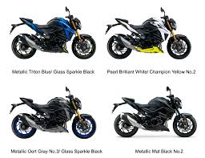
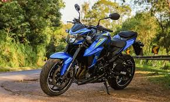

Gsx-s750
| Marca |
Modelo |
Ano |
Preço |
Oleo |
| Suzuki |
Gsx-s750 |
2015-2023 |
R$53.093,00 |
SAE 10W-40 |
- Curiosidade 1: Curiosidade 1: Possui função easy start a qual faz o motor de ararnque girar até que ligue a moto.
- Curiosidade 2: GSX-S750 usa um motor derivado da lendária GSX-R750.
- Curiosidade 3: trazia controle de tração com 3 modos.
- Curiosidade 4: Torque: 8,2 kgf.m a 9.000 rpm

